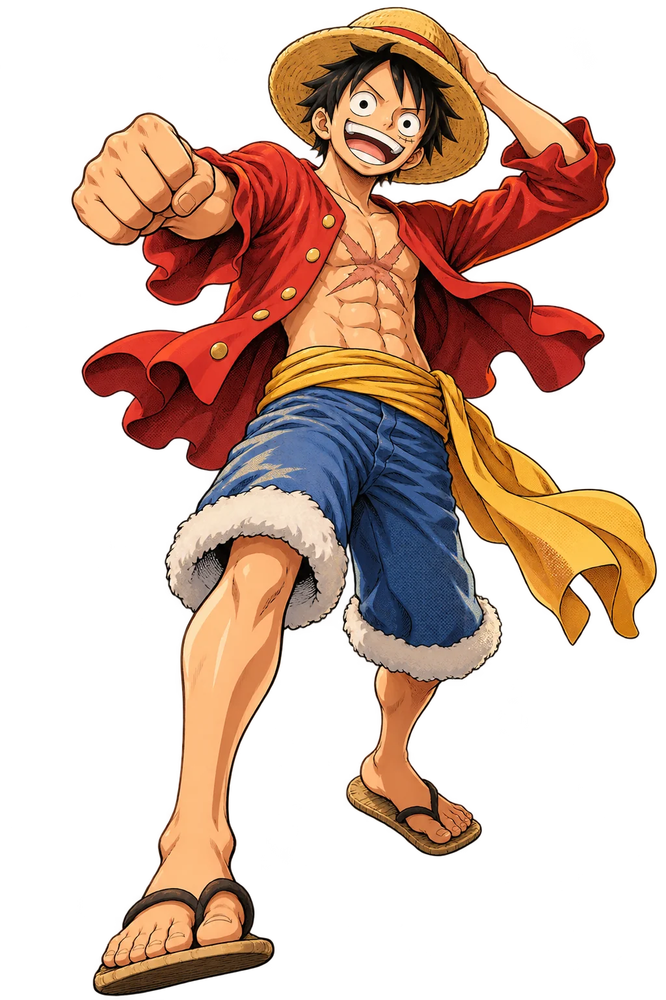
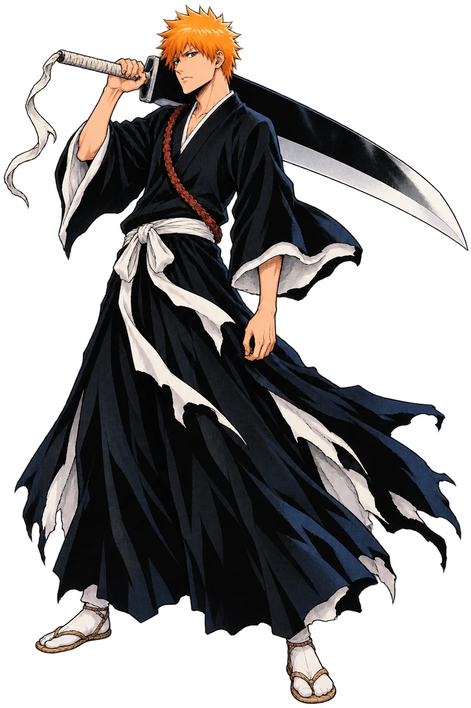

Ботплатформа
Развиваю сервис управления ботами: прорабатываю backend-изменения и интеграции, чтобы возможности платформы можно было применять в новых сценариях Телемоста.

01 / ЧЕМ ЗАНИМАЮСЬ
АВГУСТ 2025 — СЕЙЧАС
Развиваю сервис управления ботами: прорабатываю backend-изменения и интеграции, чтобы возможности платформы можно было применять в новых сценариях Телемоста.
Работаю над адаптацией компонентов платформы для развёртывания в инфраструктуре заказчика. Учитываю особенности такой среды при проектировании и реализации backend-решений.
Проектирую и разрабатываю микросервис для рассылки уведомлений: от структуры сервиса до реализации его основных сценариев.

02 / 02 · FOCUS MODEJava · Kotlin · Python · C++
Spring · PostgreSQL · Kafka
Docker · Gradle · CUE · CI/CD
Использую в разработке
02 / ПРОЕКТЫ
Алгоритмы, исследование и продуктовая разработка — проекты, в которых мне было особенно интересно искать решение.
Разобрала исследовательскую статью и реализовала в Desbordante алгоритм валидации Pattern FD, тесты, эксперименты по производительности и Python-привязки.
Разрабатывала фреймворк для сбалансированного разбиения планарных графов, добавляла эвристики и сравнивала результаты на данных OpenStreetMap.
Кроссплатформенная соцсеть для IT-стажёров. Работала над серверной частью: публикации, комментарии, поиск по тегам, файлы, уведомления и генерация PDF-резюме.
03 / ПУТЬ
НИУ ВШЭ, Санкт-Петербург
НИУ ВШЭ, Санкт-Петербург. Алгоритмы, распределённые системы, проектирование ПО и параллельное программирование.
Тестировала iOS, Android, Web и API, писала автотесты и участвовала в регрессионном тестировании перед релизами и A/B-тестами.
04 / НА СВЯЗИ